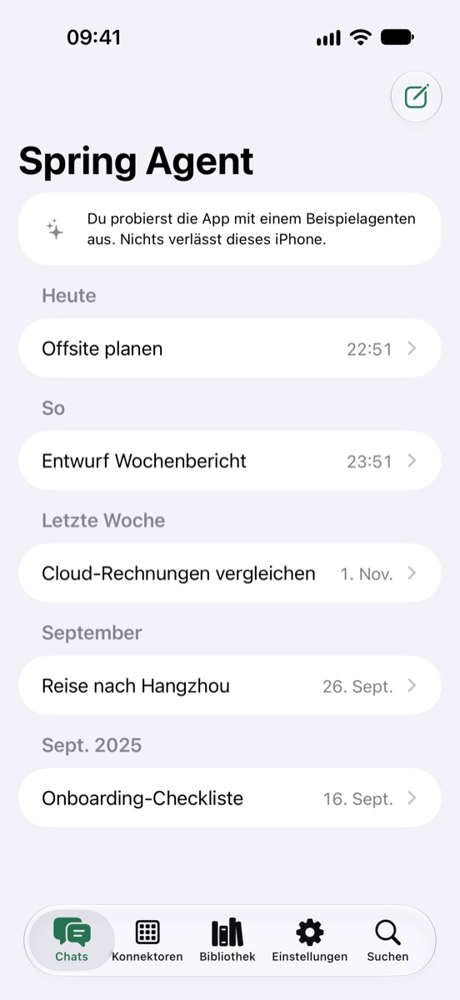
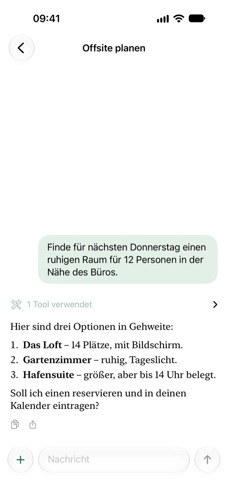
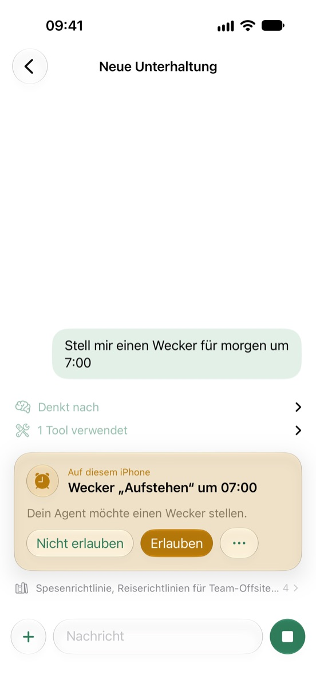
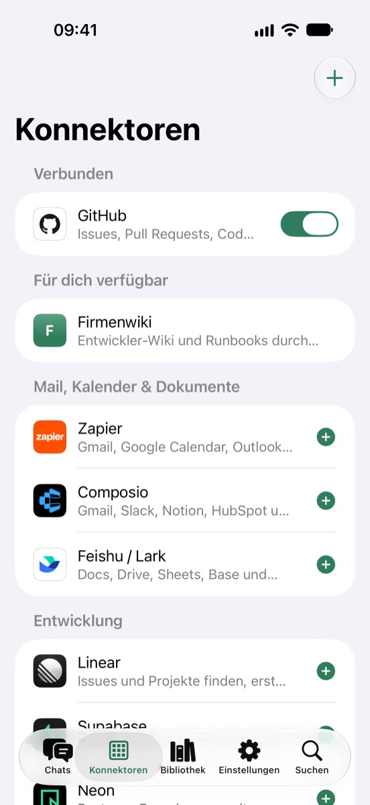
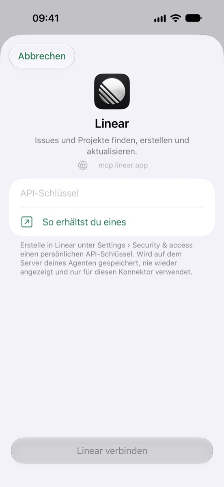
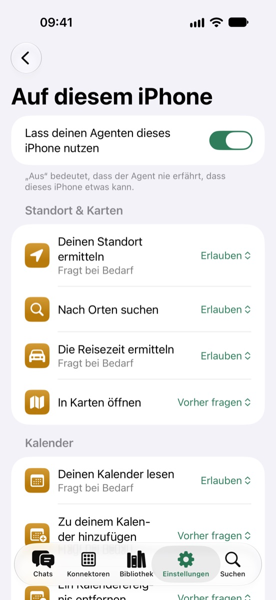
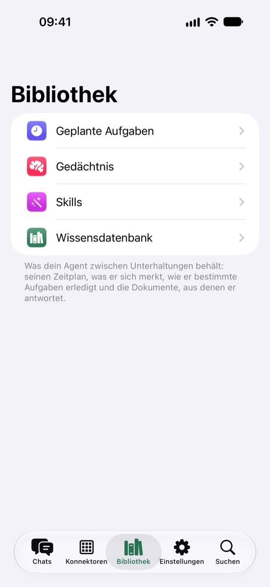
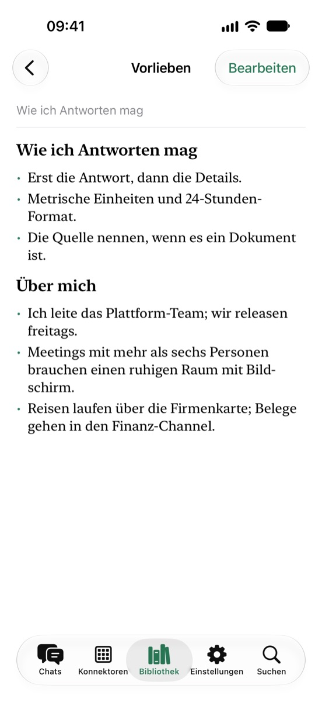

Spring Agent ist die iPhone-App für den Agenten, den du selbst betreibst. Chatte mit ihm, verfolge jeden seiner Schritte und lass ihn dein iPhone nutzen, wenn eine Aufgabe es erfordert – immer mit deiner Zustimmung.

Der Agent läuft weiter auf deinem eigenen Server. Die App ist dein Fenster zu ihm – und seine Hände, wenn eine Aufgabe dieses iPhone braucht.
Gestreamte Antworten – mit dem Denkprozess des Agenten, jedem verwendeten Tool und den gelesenen Quellen nur einen Tipp entfernt.
Standort, Kalender, Erinnerungen, Wecker, Health, Kontakte und Fotos. Der Agent fragt zuerst hier, und du legst für jedes Tool fest, wie frei er handeln darf.
Verbinde den Agenten über MCP mit GitHub, Linear, Stripe, Zapier, Feishu und mehr – oder mit einem beliebigen eigenen MCP-Server.
Geplante Aufgaben, Gedächtnis, Skills und Wissensdokumente: Was dein Agent zwischen Unterhaltungen behält, kannst du lesen und bearbeiten.
Die App kommuniziert nur mit dem Server, bei dem du dich anmeldest. Keine Analysen, kein Tracking – und mit deinem eigenen Server kein Account bei uns.
Ein integrierter Beispielagent zeigt alles, was die App kann – komplett auf deinem iPhone.







Mit deinem Agenten zu chatten und ihn deinen Kalender oder Standort lesen zu lassen, ist kostenlos. Mit Pro kann er Dinge auf diesem iPhone ändern – Wecker, Ereignisse, Erinnerungen, Einträge in Health, Entwürfe von E-Mails und Nachrichten – und du kannst mehr als drei Konnektoren aktivieren.
Kein eigener Server? Spring Agent Cloud betreibt deinen Agenten für dich, alles aus Pro inklusive. Die App muss dafür nicht offen sein: Braucht eine Aufgabe dieses iPhone, wartet die Anfrage bis zu einen Tag, statt fehlzuschlagen. Was du erlaubt hast, läuft im Hintergrund; bei allem, was vorher fragen soll, bittet dich eine Mitteilung, zu tippen und zu erlauben, und die Unterhaltung geht weiter. Außerdem meldet sich dein Agent, wenn er eine Frage an dich hat oder eine Antwort fertig ist.
pro Monat
pro Jahr, mit einer kostenlosen Testwoche für Neuabonnent:innen
US-Preise; der App Store zeigt dir deine. Abos verlängern sich automatisch, sofern sie nicht mindestens 24 Stunden vor Ende des Zeitraums unter „Einstellungen“ › „Apple Account“ › „Abonnements“ gekündigt werden. Siehe Nutzungsbedingungen.
Fragen, Fehler oder Ideen: Eröffne ein Issue auf GitHub oder schreib an contact@kezhenxu94.me. Um deinen eigenen Agent-Server zu betreiben, starte mit dem Repository von Spring Agent.